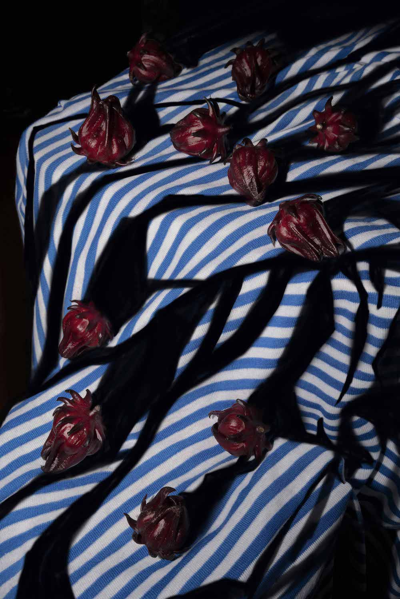
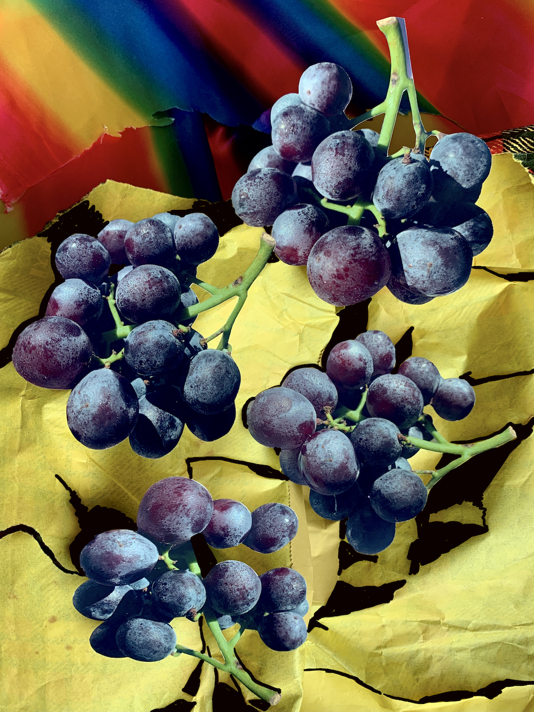
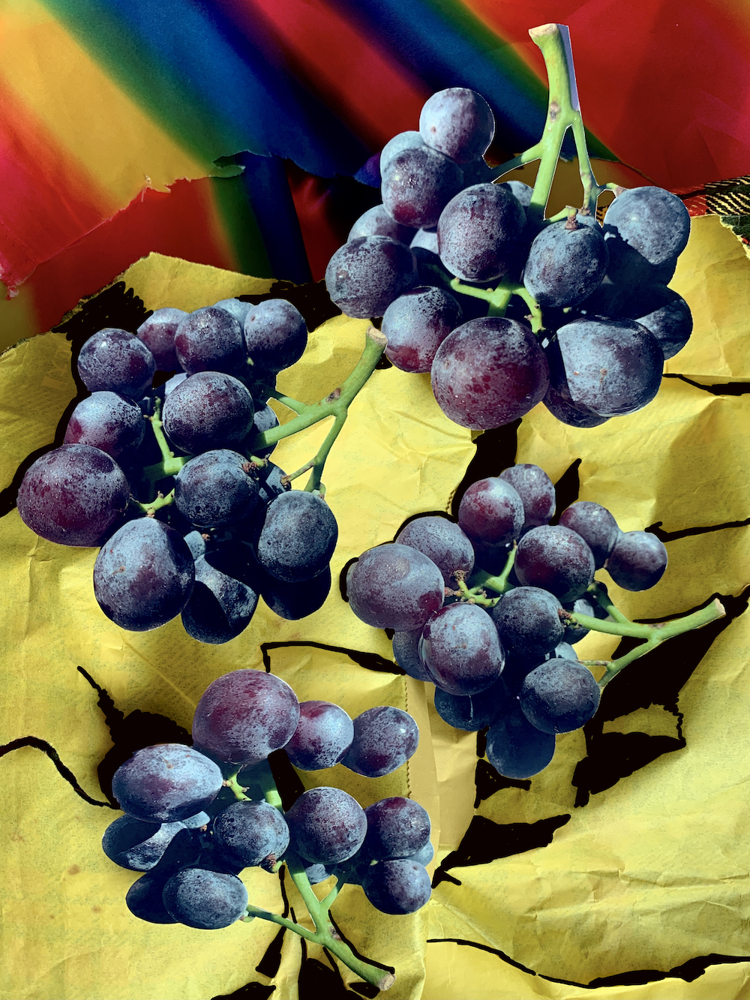
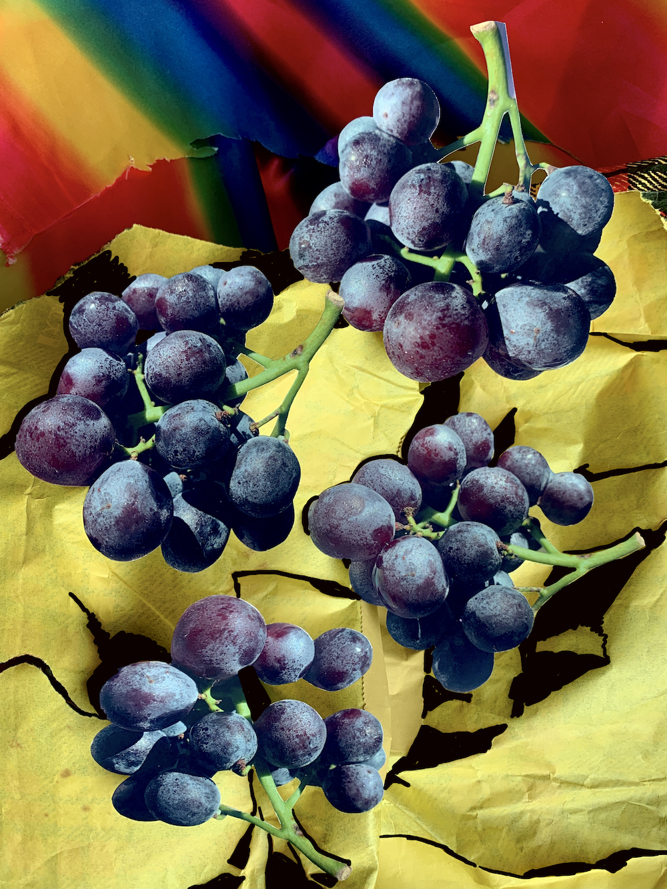

 


潘朵拉的盒子, 2022
「潘朵拉的盒子」重新探索影像對她的意義，在真實世界裡完全的遊走在影像場景的真實與虛擬邊界，
反覆顛倒運用客體與主體的關係，再將影像改變成不同媒材與形狀為目的。
Pandora’s box, 2022
‘Pandora’s Box’ reconsiders Wu MeiChi’s relationship to photographic images,
where she challenges the relationship between the subject and the object.
Navigating the boundaries between the real and the virtual world, Wu
expands on the possibility of image-making to take on different shapes
and forms across various media.